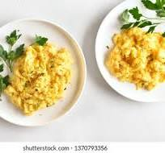

Best scrambled eggs available

This is thw most wanted recioe and it's made here only for your disposal.
Scrambled eggs are at the top when ranking the delicious meals.
History of the scrambled eggs
Scrambled eggs has come a long way since the domestication of chicken.
Ingridents
- Eggs
- Onions
- water
- cooking fat
- Vanilla
- Salt
Directions
- pour a spoonfull of cooking fat in the
- Add a pinch of salt
- Add the egg with the onions
- stier and wait for it to cook for a minute